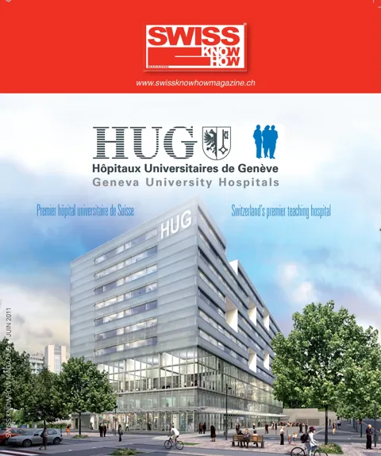

En bref
Arrivé à Genève en 1993, le professeur Stylianos Antonarakis dirige le service de médecine génétique, le plus important de Suisse avec 65 personnes, qui assure soins, enseignement et recherche. Environ 1200 patients et familles le consultent chaque année pour des maladies à forte composante génétique ou des grossesses à risque. Il rappelle que le séquençage d'un génome, qui a coûté 3 milliards de dollars en quinze ans, se fait désormais en un mois pour 10 000 francs, et évoque les enjeux éthiques de cette lecture complète. Il vient de créer une clinique du génome visant à séquencer l'ADN de quelque 100 000 personnes. Les HUG ont ouvert en 2010 le premier centre suisse dédié à la trisomie 21, avec des essais cliniques de médicaments prévus début 2012.
« C'est un progrès extraordinaire, plus rapide encore que celui de l'informatique elle-même. »— Stylianos Antonarakis
L'interview intégrale
Inscrite parmi les axes prioritaires du plan stratégique 2010-2015 des HUG, la médecine génétique occupe une place de choix à Genève, où cette discipline a acquis une renommée internationale, notamment grâce aux travaux sur le chromosome 21 (trisomie). Arrivé à Genève en 1993, le professeur Stylianos Antonarakis est le troisième professeur de génétique médicale de l’UNIGE, après David Klein et Eric Engel. « J’avais opté pour Genève en raison du rôle pionnier de son Université dans la génétique moléculaire et des perspectives de développement rendues possibles par la volonté politique du Conseil d’État genevois. » Dix-huit ans après, ce scientifique de haut niveau se dit « très reconnaissant du soutien de l’Université, des HUG et du monde politique ». Le service de médecine génétique qu’il dirige, fort de 65 personnes, est le plus important de Suisse et l’un des plus importants en Europe. Petit tour d’horizon avec le professeur Antonarakis.
Quelles sont les principales missions du service de médecine génétique ?
Ce service remplit trois missions. Il y a d’abord une mission clinique, c’est-à-dire soigner les maladies génétiques et les maladies héréditaires dues à des mutations dans le génome. Nous avons ensuite une mission d’enseignement. Enfin, notre mission de recherche consiste à chercher les causes des maladies génétiques et à comprendre les mécanismes moléculaires de ces maladies. Il s’agit de recherches compétitives au niveau international.
Grosso modo, 60 % des personnes travaillant pour le service se consacrent à la recherche et 40 % sont au service de la population dans une activité de consultation, de conseil clinique et de diagnostic moléculaire. Quelque 1 200 patients et familles consultent notre service chaque année, ce qui représente environ 2 500 tests cytogénétiques et 1 200 tests moléculaires. Les prestations augmentent chaque année.
Pour quels types de pathologies êtes-vous consultés ?
Nous sommes consultés pour diagnostiquer toutes sortes de maladies qui ont un composant génétique assez fort comme le dysmorphisme, le retard mental, les maladies métaboliques, la schizophrénie, l’obésité, le diabète, etc. Nous sommes beaucoup consultés lors de grossesses à hauts risques.
Le séquençage complet du génome humain a été annoncé en 2003. Quelle a été l’évolution depuis ?
Il a fallu 15 ans et 3 milliards de dollars, soit à peu près un dollar par lettre, pour lire ce premier génome. Huit ans plus tard, on peut séquencer le génome entier d’une personne en un mois pour 10 000 francs. C’est un progrès extraordinaire, plus rapide encore que celui de l’informatique elle-même.
Petit rappel de définition : qu’est-ce que le génome ?
Le génome est un énorme « livre » d’informations génétiques qui dit comment se développe un individu, comment il grandit, vieillit, et quelles sont ses susceptibilités de développer telle ou telle maladie. Ce « livre », appelé « chromosomes » en génétique, est présent dans chacune de nos cellules, en deux copies, l’une provenant du père et l’autre de la mère. On parle de « livre » parce que cette information est écrite au moyen de quatre lettres (A, G, C, T), des substances chimiques qui forment l’ADN. La séquence de ces lettres donne le gène. Le génome contient 3 milliards de lettres léguées par le père et autant qui sont léguées par la mère. Un individu humain compte 22 chromosomes plus celui qui détermine le sexe.
Une lettre sur mille est différente entre deux individus, ce qui induit une grande variabilité et l’unicité génétique de chaque personne, à l’exception, à la naissance, des jumeaux monozygotes. Si on lit le texte complet d’un individu, ce que nous pouvons faire aujourd’hui, nous disposons d’un outil très performant pour diagnostiquer des maladies et cibler des prédispositions.
Une telle lecture « complète » ne va pas sans poser des problèmes éthiques en cas de forte prédisposition à des maladies graves.
Oui, il y a des enjeux éthiques, légaux et sociaux lors de chaque consultation. Nous fournissons des informations et des options, un conseil neutre. À la fin, les décisions sont prises par le couple s’il s’agit d’un diagnostic prénatal ou par la famille dans d’autres cas. Au-delà de la loi, les décisions dépendent des croyances, des traditions et de la culture des familles et des individus.
Vous venez de créer une clinique du génome (The Genom Clinic), la première dans le monde. De quoi s’agit-il ?
Il n’est pas question de « traiter le génome », mais de s’intéresser aux liens entre la variabilité dans le génome d’une famille et les maladies héréditaires présentes et prévisibles. L’objectif est de séquencer l’ADN complet de quelque 100 000 individus, démarche qui place l’arc lémanique au cœur de la révolution médicale du XXIe siècle.
Par exemple, le retard mental est un handicap qui peut être déterminé par 120 gènes. Jusqu’à présent, on prenait les trois plus fréquents. Nous pouvons dorénavant affiner de telles analyses. Il devient possible de tout lire.
Mais ce n’est pas parce qu’une prédisposition existe que la maladie va forcément se développer. Tout dépend de la « pénétrance » d’une mutation. De fortes variations de probabilités de mutations existent à l’intérieur des gènes.
La médecine génétique permet de comprendre et donc parfois de prévenir. Qu’en est-il des thérapies génétiques ?
Il y a peu de thérapies actuellement, mais de nombreuses études sont en cours. Les généticiens de ma génération ont surtout œuvré à la compréhension des maladies, clé indispensable pour ouvrir la voie à de futures thérapies. De grands pas seront probablement accomplis dans le domaine thérapeutique par la génération suivante.
Un centre dédié à la trisomie 21
Les HUG ont ouvert en 2010 le premier centre en Suisse d’expertise clinique exclusivement dédié à la trisomie 21. Il a pour objectif d’améliorer le suivi des personnes atteintes de cette maladie et le développement de thérapies dans le cadre d’essais cliniques. La trisomie 21 est le sujet de recherche personnelle du professeur Antonarakis, qui y travaille depuis plus de vingt ans.
Les travaux portent sur la compréhension des différents aspects de la trisomie comme le retard mental, la cardiopathie, le dysmorphisme, la petite taille, le vieillissement précoce, etc. Il s’agit d’explorer les mécanismes moléculaires de cette maladie découverte en 1959 : au lieu de compter deux chromosomes 21 (légués par le père et la mère), les individus touchés par cette maladie en comptent trois.
Pour la première fois, il est question de la possibilité de traiter le retard mental de la trisomie 21 avec des médicaments. Après des tests concluants sur des souris trisomiques créées en laboratoire, démontrant que six médicaments au moins réduisent le défaut de mémoire et améliorent le processus d’apprentissage, des essais cliniques sur des patients humains vont être entrepris au début 2012.
Le professeur Antonarakis explique que les résultats positifs observés sur la souris autorisent des hypothèses optimistes. Nous avons en commun une grande part de notre génome avec les mammifères. Entre nous et la souris, un ancêtre commun a existé il y a 80 millions d’années, si bien que l’homme et la souris du XXIe siècle ont « des régions identiques » dans leur génome.
La découverte de la trisomie 21 a joué un rôle fondamental dans les progrès de la génétique en 1959. Quand on sait que cette maladie concerne une naissance sur 700 et que le diagnostic prénatal permet aujourd’hui de détecter la maladie, et donc de décider d’un avortement, on mesure l’impact qu’aurait un médicament susceptible d’en limiter les effets.
Texte paru dans Swiss Knowhow – HUG Hôpitaux Universitaires de Genève 2011, p. 36-37.
Personnes citées
- Stylianos AntonarakisProfesseur, chef du service de médecine génétique

Paru dans
Swiss Knowhow – HUG Hôpitaux Universitaires de Genève 2011
2011 · page 36-39 · article original en français
Lire l'article complet PDF